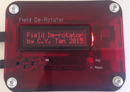

Introducing the Field DeRotator

by
C.Y. Tan
June 2015
Copyright
Copyright (C) 2015 C.Y. Tan
Permission is granted to copy, distribute and/or modify this document
under the terms of the GNU Free Documentation License, Version 1.3
or any later version published by the Free Software Foundation;
with no Invariant Sections, no Front-Cover Texts, and no Back-Cover Texts.
A copy of the license is included in the section entitled "GNU
Free Documentation License".
Table of Contents
Introduction
The Field Derotator is a device that counter rotates the imaging
camera that is connected to an alt-az mounted telescope. The theory
that describes how a derotator works can be found here.
Important: The Field Derotator only works with setups that have an
off-axis guider. The off-axis guider must rotate with the camera
for derotation to work properly.
The Field DeRotator consists of three parts:
These parts are described in the next two sections.
The Parts of the DeRotator System
Interface
This is the user interface that runs on a Mac. The interface connects
to the controller via either wifi or a serial line. The user interface
is unnecessary for controling the DeRotator system because the
controller can be used in standalone mode. The instructions for using
the interface can be found here .

Controller

The controller is the unit that powers the derotator and allows the
user to control it. The controller can be used in
- standalone mode
- user control with the interface described above.
The instructions for using the controller can be found here .
DeRotator
 The derotator that is the interface between the imaging camera to the
telescope. Instructions for connecting the imaging camera to the
derotator and then the derotator to the telescope can be found here.
The derotator that is the interface between the imaging camera to the
telescope. Instructions for connecting the imaging camera to the
derotator and then the derotator to the telescope can be found here.
GNU Free Documentation License
This document is copyrighted under the GNU Free Documentation License